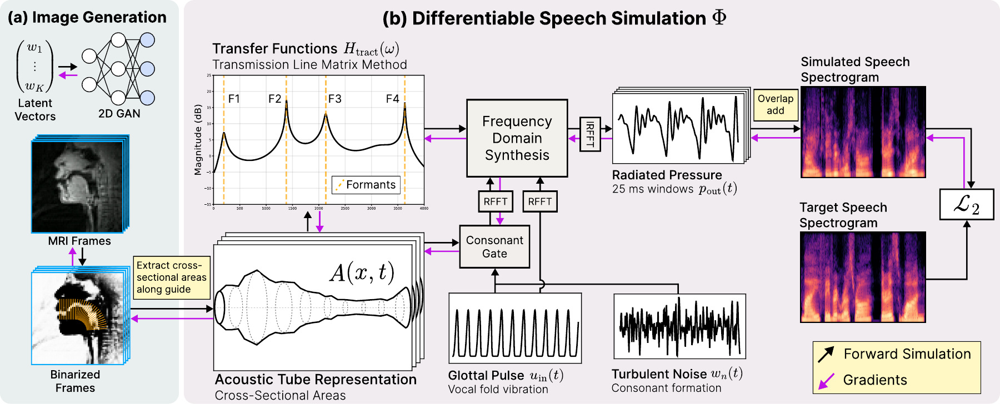
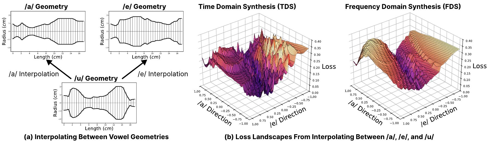
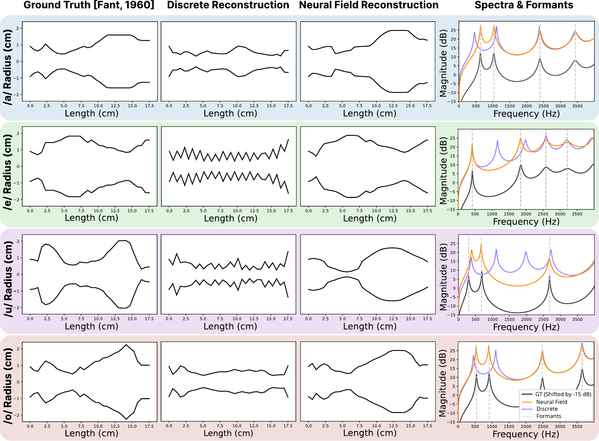
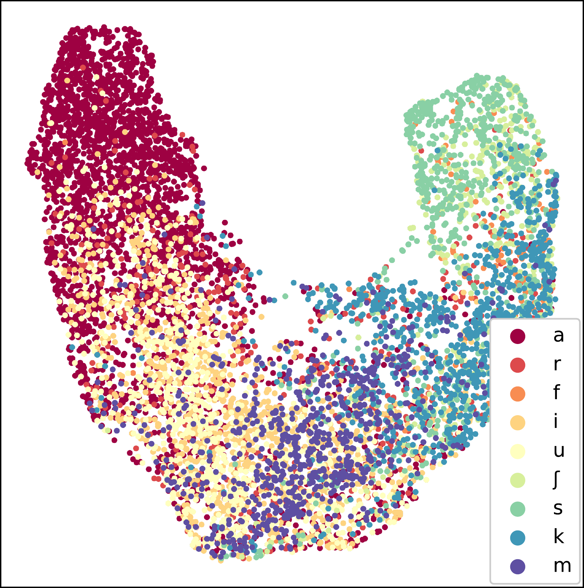

NeurIPS 2026 · Spotlight
Reconstructing the Vocal Tract with Differentiable Acoustic Simulation
1MIT CSAIL 2MIT RLE 3KAIST GSCT
The shape of your vocal tract gives your voice its sound. Can we work backward—from a recording to the geometry that produced it?
We build a differentiable acoustic simulator that turns a moving tube into speech. By backpropagating through the physics, we can optimize the tube’s shape to match a recording—and connect sound to an interpretable model of the vocal tract.

01 / From shape to sound
A physical model you can differentiate
Your vocal folds provide an excitation. The cavities above them—the throat and mouth—filter that excitation. Changing a constriction or opening changes the resonances, or formants, that help distinguish one speech sound from another.
We approximate the vocal tract with a chain of acoustic tube sections. Their cross-sectional areas determine how pressure and flow propagate, including losses at the walls and radiation at the lips. For voiced sound in a fixed configuration, the frequency-domain model is a transfer function:
A is the area along the tract, ℓ its length, and g the excitation.
Working in the frequency domain lets us evaluate frequencies and short overlapping windows in parallel. The paper reports a 70× speedup over time-domain simulation on an RTX 4090 with 25 ms windows and a ¼-window hop. A differentiable turbulence model extends synthesis from vowels to consonants.
A closer look at the loss landscape
Speed is only one consideration. A useful differentiable simulator also needs gradients that guide reconstruction. The paper compares losses under time-domain and frequency-domain synthesis as the vocal tract changes.

02 / An experiment in your browser
Change the shape. Hear the difference.
Drag the tube profile to change its cross-sectional areas, then listen. Or choose a target and let gradient descent find a shape whose acoustic response matches it. Every optimization step is computed here in your browser.
Cross-sectional area
Drag the upper outline to reshape the tube, or use the controls below.
Estimate source pitch from a recording SwiftF0 · runs locally
Pitch comes from vocal-fold vibration; the tract shapes its resonances. Estimate the fundamental frequency (F₀) of a single voice, then hear a vowel at the recording’s median voiced pitch.
Up to 30 seconds / 20 MB. Audio stays on your device. The model loads on first use.
Use a clear recording of one speaking or singing voice.
SwiftF0 v0.3.0 analyzes 16 kHz mono audio every 16 ms. Shown frames have confidence ≥ 0.5 and pass a silence gate. The median sets a constant source pitch; the spectral fitting experiment still uses the selected vowel target. About SwiftF0 ↗
Acoustic response
Choose a target, then start fitting from a neutral tube.
03 / Solving the inverse problem
Gradients are only part of the story
Even with a differentiable simulator, reconstructing the tract is non-convex. Optimizing each area independently can stall: neighboring sections receive conflicting updates and the shape oscillates around its initialization.
Instead, we parameterize the moving area function with a neural field, A = Fθ(x, t). Shared weights couple different positions and times, giving the optimizer a useful way to coordinate changes across the tract. In the paper’s vowel experiments, neural fields recover the broad morphology and align the formants more accurately than a discrete representation.

04 / Beyond a single vowel
Speech becomes a sequence of shapes
A self-supervised encoder maps recorded speech to a time-varying area function. The simulator decodes those areas back to audio. Training uses the recording itself as the target, without paired ground-truth vocal tract shapes.
Original recording
“On November 8, 1963”
Reconstructed speech + areas
How is reconstruction evaluated?
Word and character error rates are measured with Whisper; speaker similarity uses ECAPA-TDNN embeddings. The table below shows the paper’s English test-set results, including 95% confidence intervals. Lower error rates are better.
| Audio | Word error rate (%) ↓ | Character error rate (%) ↓ |
|---|---|---|
| Original | 3.91 ± 0.84 | 2.05 ± 0.70 |
| TensorTract2 | 13.00 ± 1.82 | 7.37 ± 1.11 |
| Ours | 5.30 ± 0.94 | 2.82 ± 0.75 |
See the paper for all 11 languages and speaker-similarity metrics. The browser laboratory above is a separate illustrative experiment.

Grounding an MRI generator in acoustics
We can also put an image generator in front of the simulator. A pretrained MRI generator produces a candidate frame; differentiable segmentation extracts its area function; the simulator produces audio. The audio mismatch then updates the generator’s latent sequence.
This connects speech and MRI without paired speech–MRI training data. The MRI prior is still learned from real scans, and acoustic agreement does not uniquely identify a speaker’s anatomy.
Reference MRI + audio
Reconstructed MRI + audio
Explore all supplementary results More languages, MRI comparisons, singing, and out-of-distribution sound.
05 / What this makes possible
A physical connection between speech and geometry
Differentiable simulation gives learning systems an acoustic constraint: a proposed shape must actually produce the desired sound. It also leaves room for useful priors—neural fields for coordinated geometry, speech encoders for generalization, and generative models for plausible images.
The resulting shapes are interpretable, but not uniquely determined. A tube is also a reduced model of three-dimensional anatomy, and this work does not explicitly reconstruct the nasal tract. These limits matter when interpreting a reconstruction and when considering applications in pronunciation feedback, language learning, or medical imaging.
Citation
@inproceedings{Chen2026DiffTLM,
author = {Chen, Eric Ming and Lee, Jin Woo and Sitzmann, Vincent},
title = {Reconstructing the Vocal Tract with
Differentiable Acoustic Simulation},
booktitle = {Advances in Neural Information Processing Systems},
year = {2026}
}